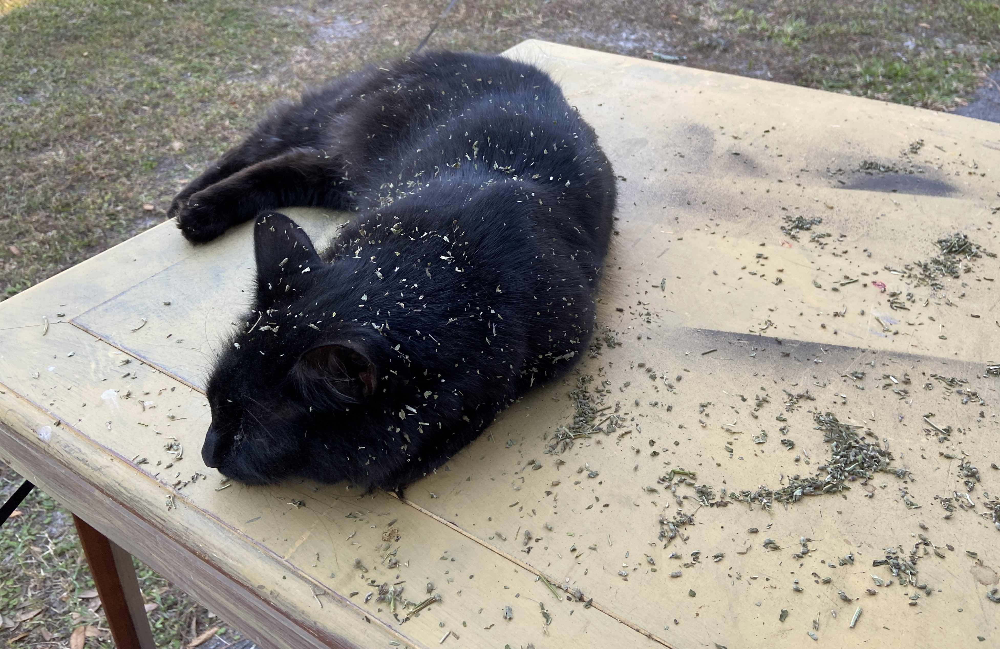
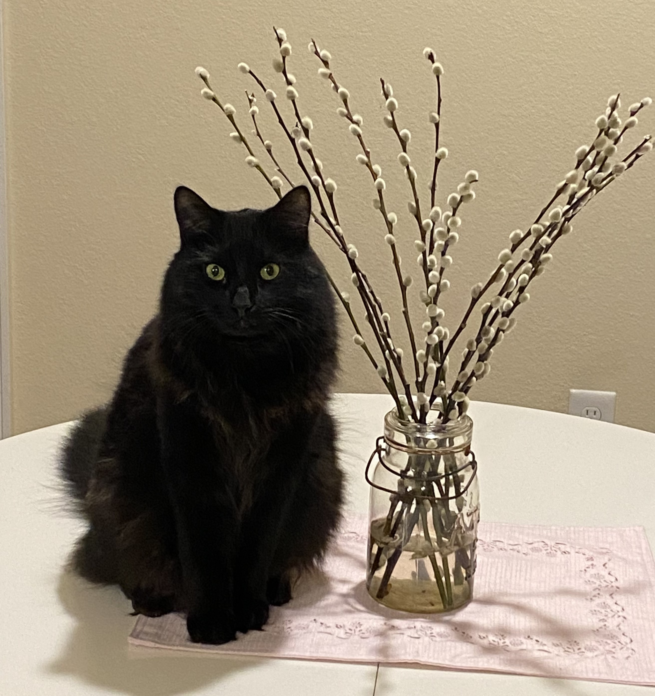
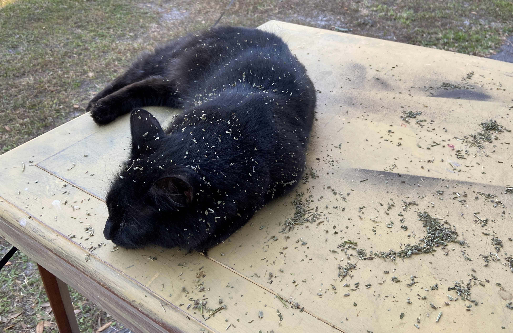
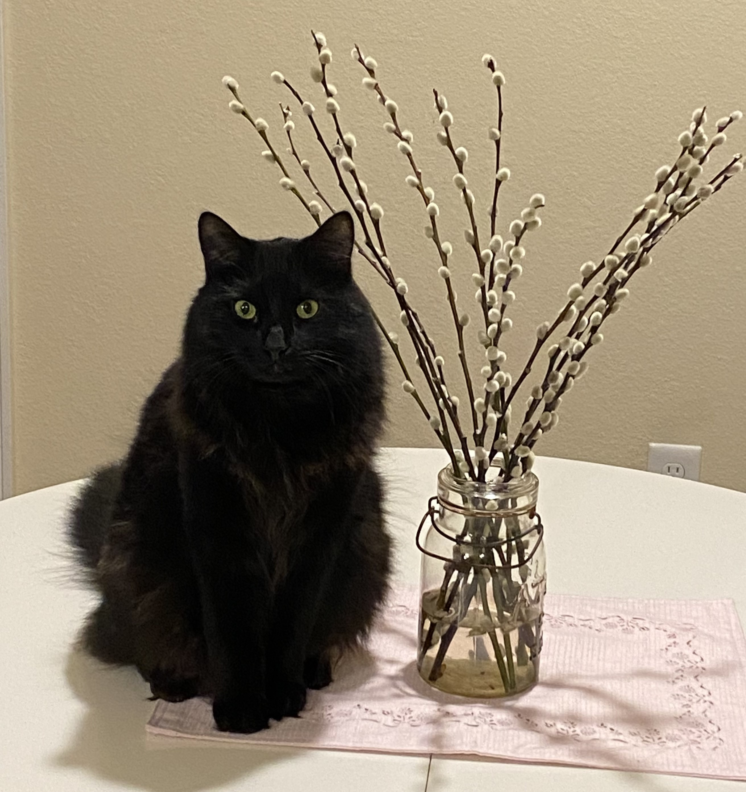

Meet Smokey, a male Domestic Medium-hair cat with a soft, void-black fur coat. He loved to go outside and hunt for critters. When we lived in Maine, he mostly caught chipmunks, but when we moved to North Carolina, he started catching bunny rabbits. One time, he even brought a bunny inside the house. When he wasn’t out hunting, he would usually be lying in our paper recycling basket.
Smokey had a lot of quirks; one of them was that he could climb up a tree, but he couldn’t climb down. I remember one time when he got stuck in a tree in Maine, my other cat, Pumpkin, climbed up the tree to the branch Smokey was on, meowed at him, and then climbed back down. It was as if Pumpkin had gone up there and said to Smokey, "Okay, now watch me. This is how you climb down the tree." Pumpkin continued to climb up and down the tree two more times, but after the third climb, Pumpkin gave up and went inside the house. In the end, Smokey could not climb down from the tree, and we decided to use a ladder to get him out. Sadly, Smokey is no longer with us as he passed away a few years ago, but although he has passed he will always be loved and I will always remember that time he got stuck in the tree in Maine.
Below are some pictures of Smokey.
 


